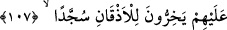

“İyileri, heybet eserinden korkutur ki amellerine güvenmesinler.”
Zâhid gurura kapıldı, yolu onu selâmete iletmedi
Rind niyâz yolundan dâru’s-selâma (cennete) gitti.
106. Biz onu, Kur’an olarak, insanlara dura dura okuyasın diye (âyet âyet, sûre
sûre) ayırdık; ve onu peyderpey indirdik.
“Biz onu, Kur’an olarak, insanlara dura dura” ağır ağır “okuyasın diye” âyet âyet,
sûre sûre “ayırdık;” parça parça indirdik. Çünkü bu, ezberlenmesini daha kolay kılar
ve anlaşılmasına daha çok yardımcı olur. “Ve onu” yirmi üç senede hikmet kanunu
üzere hâdiselere ve insanların sorularının cevaplarına göre “peyderpey indirdik.”
107. De ki: “Siz ona ister inanın, ister inanmayın; şu bir gerçek ki, bundan önce
kendilerine ilim verilen kimselere o (Kur’an) okununca, derhal yüz üstü secdeye
kapanırlar.”
İnkâr edenlere “De ki: “Siz ona” yâni Kur’an’a “ister inanın ister inanmayın.”
Çünkü sizin ne inanmanız onun kemâlini artırır, ne de inanmamanız onda bir eksiklik
meydana getirir.
Gönül rahatı olan sevgilinin yüzünün berbere ihtiyacı yok
Kâşifî Tefsîri’nde ifâde edildiği üzere buradaki emir tehdid anlamındadır.
“Şu bir gerçek ki, bundan önce kendilerine ilim verilen kimselere” yâni
yahudilerden Abdullah b. Selâm ve ona uyanlar ile hristiyanlardan Necâşî ve ashabı
gibi Kur’an’ın indirilmesinden önce geçmiş kitapları okuyup vahyin hakikatini,
peygamberliğin emârelerini anlayan, hak ile bâtılı, hakkı getirenle bâtılı getireni
birbirinden ayırdeden âlimlere “o” Kur’an “okununca” Allah’ın emrini tâzim ile
“derhal yüz üstü secdeye kapanırlar.” “
çeneler” kelimesi burada mecâzen bir
şeyin bir bölümünü zikredip tamamını kasdetme yoluyla ifâde edilmiştir.
Onların Allah’ın emrine tâzim ile secdeye kapanmaları, ““Siz ona ister inanın, ister
inanmayın” ifâdesindeki onların inanıp inanmamalarına önem vermemenin sebebini
ortaya koymaktadır. Yâni eğer siz inanmazsanız, buna sizden daha hayırlıları en güzel
îman ile îman etmişlerdir.